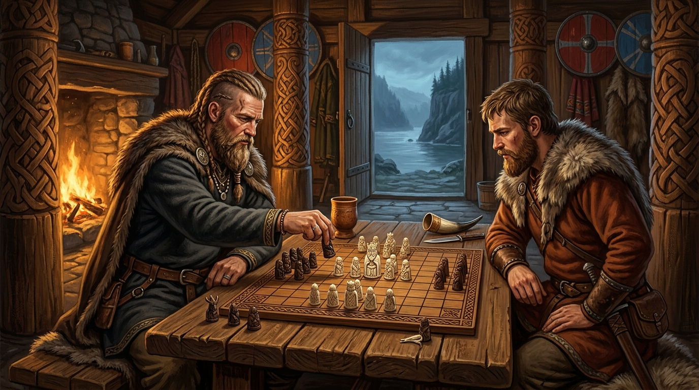

公元 4 世纪北欧维京纯策略古棋 · 零骰子 · 护送国王突围 vs 两倍军力合围
不会！ 维京棋采用“主动夹击制”，只有对手在他的回合移动棋子形成夹击才会吃子；你主动钻进对方两子中间是绝对安全的，甚至经常用来卡位破阵！
是的！ 四个角落堡垒（🏰）以及国王离开后的空王座（❖）对双方都充当“敌对墙”，只要把敌兵逼在角落旁或空王座旁，只需 1 枚己方棋子就能夹死它！
7×7 (Brandubh) 是古代爱尔兰与维京快棋（1王+4卫 vs 8黑兵），3–5 分钟一局，极度爽快，强烈推荐新手先玩！9×9 (Tablut) 是拉普兰经典大盘（1王+8卫 vs 16黑兵），纵深更深、攻防更宏大。
为了避免你刚打开页面或刚切换盘面时电脑抢跑，黑方 AI 先手时会先原地待命，等你点击棋盘下方的 ▶️ 开始对局 后再正式出击。
维京棋是完全信息零骰子纯策略博弈。👑 维京大酋长 AI 采用带启发式走法排序的 Alpha-Beta 剪枝搜索（7×7 搜索 3 层、9×9 搜索 2 层），综合评估子力差、国王距角落曼哈顿距离、双线叫杀通道与角落前哨封锁。
| 对阵 (7×7 对称 24 局) | A 胜率 | 平均回合 | 单步耗时 |
|---|---|---|---|
| 👑 大酋长 vs 随机 | 100.0% (24/24) | 12.8 | 1.82 ms |
| 👑 大酋长 vs 🌱 入门 | 95.8% (23/24) | 11.2 | 1.40 ms |
| 👑 大酋长 vs 🤖 标准 | 58.3% (14/24) | 21.5 | 1.58 ms |
完整评测报告与复现脚本见项目内 AI_BENCHMARK.md 与 bench_ai.js。

Hnefatafl（赫涅法塔弗，古诺尔斯语意为“国王的棋桌”）诞生于公元 4 世纪左右的北欧。在公元 11–12 世纪国际象棋传入北欧之前，它曾是维京海盗、国王与吟游诗人最钟爱的策略棋——维京船葬中经常陪葬精美的骨雕国王棋子，它随维京长船一路传播到冰岛、格陵兰、苏格兰与爱尔兰！
中世纪后 Hnefatafl 逐渐被国际象棋取代而失传。幸运的是，1732 年著名的瑞典“分类学之父”卡尔·林奈（Carl Linnaeus）在拉普兰（北欧极地）考察植物时，偶遇当地萨米人仍在玩 9×9 的变体 Tablut，并把全套规则记进了自己的旅行日记——这份珍贵笔记让失传数百年的维京王者之棋得以在现代重获新生！
暂无走子记录。